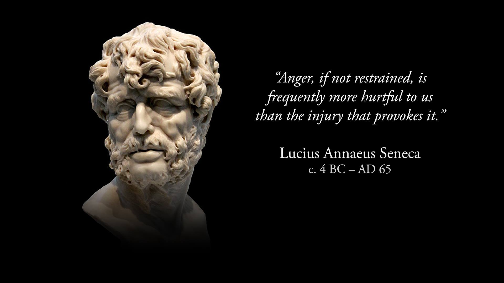

Notable Thinkers of the past
• seneca

• Marcus Aurelius
.jpg)
• Plato
.jpg)
• Chanakya
.jpg)
•Epictetus
.png)
Branches of Philosophy
Philosophy deals with fundamental questions. But which questions, specifically, is philosophy about? Here’s a standard categorization:
.png)
- Logic: Logicians study good and bad arguments and reasoning, and they study formal, symbolic languages intended to express propositions, sentences, or arguments.
.png)
- Metaphysics: Metaphysicians study what sorts of entities exist, what the world and its constituents are made of, and how objects or events might cause or explain each other.
.png)
- Epistemology: Epistemologists study knowledge, evidence, and justified belief. An epistemologist might study whether we can trust our senses and whether science is trustworthy.
.png)
- Values: In value theory, philosophers study morality, politics, and art, among other topics. For example: What makes wrong actions wrong? How do we identify good people and good lives? What makes a society just or unjust?